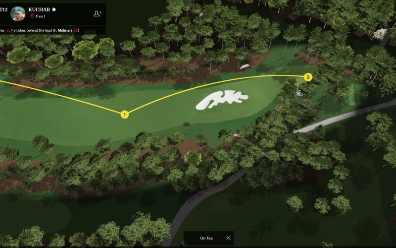
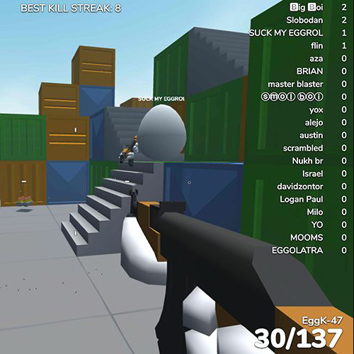
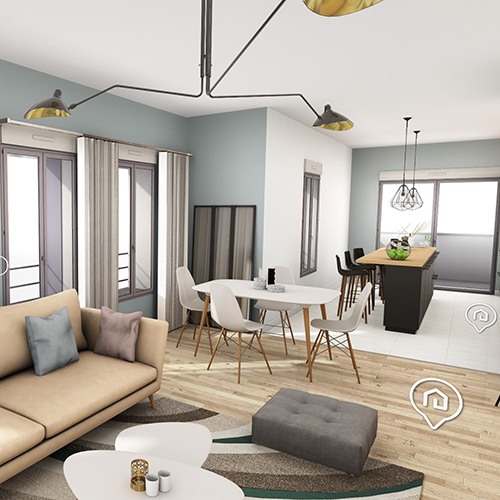

TOOLS
COMMUNITY
GAMES
E-COMMERCE
BABYLON NATIVE
LEARN
SPECIFICATIONS
RELEASE NOTES
GET
PLAYGROUND
SANDBOX
NODE MATERIAL EDITOR
DOCUMENTATION
EXPORTERS
SPECTOR.JS
FORUM
DEMOS
BABYLON NATIVE RUNTIME
BABYLON REACT NATIVE
DOCUMENTATION
VIDEOS
BLOG
ENGINE SPECIFICATIONS
MAIN FEATURES
Transparent WebGL 1.0 /
WebGL 2.0 /
WebGPU
support
Complete scene graph
with lights, cameras, materials, meshes, animations, audio & actions
Easy to use full featured viewer
Native host (iOS, Android, MacOS, Win32, UWP)
Native
collisions
engine
Physics engine
(thanks to
oimo.js
ammo.js
and
cannon.js
integrations)
Scene picking
Support left and right handed systems
Anti-aliasing
Animations
engine
Particles
(both CPU and GPU) and
Solid particles
Systems
Sprites
and 2D layers
Complete
audio engine
based on Web Audio
Hardware accelerated
GUI
Behaviors
Accelerated 2D controls
SHADERS / RENDERING
Node Material
Physically Based Rendering (PBR)
Clear coat
Sheen
Diffuse lighting and texture
Ambient lighting and texture
Specular lighting and texture
Opacity texture
Mirror texture
Emissive texture
Bump texture
Lightmap texture
Unlimited lights (points, directionals, spots, hemispherics)
Light texture projection
Skybox
Vertex color
Up to 8 bones per vertex
Morphing
Render target textures
Dynamic textures (2D canvas)
Reflection texture (Spheric, planar, cubic, projection and equirectangular)
Video textures (including from webcam)
Compressed (DDS, KTX, .basis) textures & TGA
360 photos and videos
Procedural textures library
Materials library
MESHES
Mesh cloning
Dynamic meshes
Decals
Height maps
Skeletons and bones
Parametric shapes (Ribbon, tubes, etc.)
Morph targets
Dynamic mesh simplification
Constructive Solid Geometries
OPTIMIZATIONS
Frustum clipping
Sub-meshes clipping
Hardware scaling
Occlusion queries
Selection octrees
Offline mode (Assets saved in IndexedDB)
Incremental loading
Binary compressed format
Hardware accelerated instances
Automatic scene optimizer
LOD (Level Of Details)
Meshes merging
Offscreen canvas
Engine sharing over multiple canvases
SPECIAL FX
Fog
Alpha blending
Alpha testing
Billboarding
Fullscreen mode
Shadow Maps and Exponentatial Shadow Maps (including soft shadows with PCF and PCSS)
Cascaded Shadow Maps
Post-processes
Depth of field
Image processing
Bloom
Grain
Anti aliasing
Sharpening
Screen space reflections
Rendering layers
Lens flares
Reflection Probes
Edges renderer
Multi-views
Highlights rendering
Glow layer
Navigation mesh and crowd of moving agents
CAMERAS
Universal camera (keyboard/touch/gamepad)
Arc rotate camera
Free camera
Touch camera
Virtual Joysticks camera
WebVR camera
Gamepad camera
VR Device Oriention camera for Cardboard
Follow camera
Anaglyph camera
EXPORTERS AND TOOLING
Exporters for glTF, OBJ and Babylon file formats
Importers for glTF, STL, OBJ and Babylon file formats
Support for drag'n'drop
Inspector
Assets manager
TOOLS INTEGRATION
FEATURED DEMOS
Marble Tower
by PirateJC
SharePoint Spaces
by Microsoft

US Masters
by ANGC
Adobe Dimension web export
by Adobe

Shell Shockers
by Fun Fetched
JigSpace
by JigSpace Inc.

Apartment Configurator
by Axeon Software
MORE